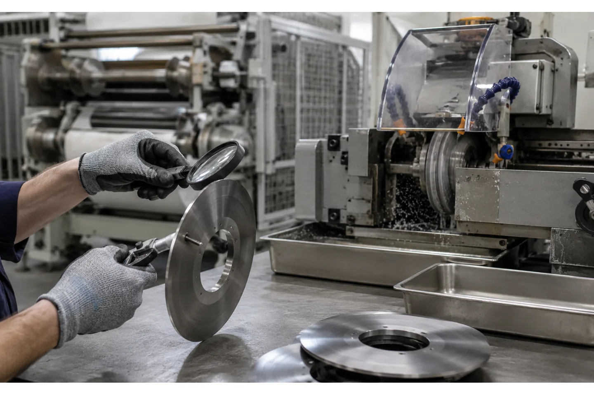

Published August 13, 2026 | By HDPTH Technical Editorial Team


For plant managers and engineers operating web converting lines, slitter blade maintenance is a critical variable in overall plant profitability. The initial cost of slitter knives is small compared with the downstream financial impact of poor cut quality. When blades degrade, converters face increased scrap rates, excessive slitting dust, rejected master rolls, and unscheduled machine downtime.
Managing a slitter rewinder effectively requires a transition from reactive blade changes to a proactive blade maintenance strategy. This guide details how to recognize dull blades, when to use slitter knife sharpening versus purchasing new blades, and how to evaluate knife systems during equipment procurement.
Why blade sharpening is an operating decision, not just maintenance
In nonwoven, paper and flexible packaging converting, blade condition largely dictates the quality of the finished product. Operating with dull blades is not merely a maintenance oversight; it is an active operating decision that affects every downstream process.
When a slitter knife loses its precise edge geometry, it stops cleanly shearing or slicing the web and begins to crush, tear or extrude the material. That mechanical failure produces burrs, ragged edges and a clear increase in slitting dust. In cleanroom environments or food-grade flexible packaging converting, slitting dust is a common reason for master roll rejection. Dull blades also require higher cutting pressure to penetrate the web. The added resistance generates extra heat, which can soften or deform the edges of heat-sensitive thermoplastic films such as PE or PP, and it places a higher mechanical load on the slitter rewinder's drives and motors.
For that reason, scheduling slitter blade sharpening and replacement should be treated as an optimization of operating cost. The price of a scheduled blade change is small when weighed against the material value of a scrapped roll, the labor cost of rework, or the lost output of unscheduled downtime.
How to recognize a dull slitter knife
Recognizing when a slitter blade has reached the end of its effective life requires operators to monitor both the physical blade and the behavior of the slit web.
The most immediate indicators appear on the cut edge of the material. Operators should inspect for burrs, rolled edges or stretched material along the slit path. Increased edge fraying in nonwovens or a sudden rise in airborne slitting dust around the cutting section are clear signs that the blade is no longer shearing efficiently. If the slit width begins to vary or wander during a run, it often means a dull blade is deflecting under web tension rather than cutting cleanly. For a structured way to connect edge defects to their likely causes, see our guide to slitter rewinder roll defects troubleshooting.
Before removing blades for sharpening, operators should always verify the machine setup. A perfectly sharp shear knife will produce ragged, dusty cuts if the blade overlap (the depth the top knife extends past the bottom knife) or the clearance (the side pressure or cant angle between the top and bottom blades) is incorrectly set. A mis-set knife system mimics the exact symptoms of a dull blade. Only after the geometry is confirmed correct should the blade itself be condemned as dull.
The sharpen-rotate-regrind-replace decision path
Once a blade is confirmed dull, maintenance teams can follow a clear decision sequence to maximize blade life without compromising production quality.
- Rotate: for multi-edge knives, such as circular bottom bands or double-beveled shear knives, the first step is to rotate or flip the blade to expose a fresh, unused cutting edge to the web.
- Regrind: once the edge is dull but the blade remains structurally sound and above the supplier's minimum height, send it for professional regrinding. Compare the grinding quotation, turnaround time and achieved geometry with the cost and availability of a new blade instead of assuming that regrinding is always cheaper.
- Replace: a slitter blade must be retired and replaced when it is ground down to the minimum blade height or diameter specified in the slitter rewinder's maintenance manual. Blades should also be discarded if operators detect structural cracks, deep chips in the cutting edge, or blue discoloration indicating severe heat damage.
| Action | Condition trigger | Financial impact |
|---|---|---|
| Rotate | One edge shows wear and cut quality drops | Zero tooling cost; uses the existing blade investment |
| Regrind | All edges dull, no structural damage | Depends on the grinding quotation and turnaround |
| Replace | Minimum height reached, cracks, deep chips or heat damage | Highest cost; necessary for quality and safety |
Keep a simple log of installed edges, rotation dates and remaining stock for each blade. That turns the decision into scheduled maintenance instead of an emergency response when cut quality suddenly fails.
What professional regrinding does and why in-house grinding often fails
Slitter knife sharpening is a precision machining operation. Professional regrinding uses specialized surface grinding equipment with heavy coolant flooding to restore the original edge geometry, bevel angle, flatness and parallelism of the blade. Parallelism matters: if a blade's thickness varies across its width after grinding, it will not seat consistently, and cut quality will change across the web.
In-house grinding often fails for two reasons. First, localized heat: when a blade is ground without adequate coolant, the edge can exceed the tempering temperature of the steel, softening the metal and permanently reducing its ability to hold an edge. Second, geometry: holding flatness and parallelism within close tolerances over the full blade length requires controlled machine setup. Blades that are hardened through the full section keep their hardness across regrinds, so a professionally reground blade should perform close to a new one until it reaches its minimum allowable height or diameter.
Blade materials and coatings
The interval between blade changes depends heavily on the metallurgy of the knife itself.
- High-speed steel (HSS): a common, cost-effective choice for general paper and film converting. HSS offers a good balance of edge retention, toughness and cost, and responds well to repeated sharpening.
- Carbide or coated options: these may improve wear life in abrasive service, but the correct choice depends on the material, knife geometry, edge finish, regrinding route and supplier qualification. Ask for evidence from a comparable web rather than treating a material name as a universal life guarantee.
Carbide and coated blades may be worth considering for abrasive or heavily filled materials, but the decision should be based on a comparable trial, total tooling cost, regrinding support and the edge quality required by the process.
Blade change intervals by material and application
There is no universal, fixed time interval for slitter knife sharpening. Change intervals must be condition-based or footage-based, and they depend on the material being processed and the slitting method in use.
As Catbridge Machinery notes, razor blades wear at very different rates depending on the material; films with high levels of abrasive additives, such as titanium dioxide used for opacity, can dull a razor edge far faster than clear, unfilled films. Because standard razor blades are inexpensive and generally not reground, short-run facilities often accept frequent blade replacement as a cost of doing business, changing blades at planned intervals to maintain edge quality. Our comparison of razor vs shear vs score slitting methods explains how the cutting method shapes this trade-off.
Shear slitting knives represent a larger capital investment and take longer to set up, but they generally last significantly longer than razors. To determine the right change interval for shear knives, plants can track the linear footage run through the machine against cut quality. Once a baseline is established for when edge quality degrades on a specific material, changes can be scheduled slightly before that footage threshold is reached.
Blade handling, cleaning and storage
Improper handling off the machine causes as much damage to slitter knives as production wear. Blade maintenance for slitter rewinders requires strict cleaning and storage protocols.
Upon removal, blades should be cleaned with a suitable industrial solvent to remove adhesives, paper dust or resin buildup. Operators should not stack bare blades on top of one another: hardened metal-on-metal contact easily causes micro-chipping along the cutting edge. These chips are often invisible to the naked eye but will degrade cut quality once the blade is reinstalled.
Cleaned blades should be stored in dedicated holders or protective sleeves, and blades sent for regrinding should be isolated from each other during transport.
Blade management programs and spare sets
To control costs and prevent unplanned downtime, production managers can implement a formal blade management program. A practical starting point is a blade log that tracks installation date, linear footage or run hours, edge rotations, and regrind history for every blade in the facility.
A converting plant should also consider owning at least one spare set of knives for each slitting line. A spare set lets operators swap in fresh blades and resume production while the dull set is sent for regrinding. Without one, the machine can sit idle for the entire sharpening turnaround. Some blade suppliers and industrial grinding services offer managed regrind programs with rotating inventory, which keeps a stock of sharp tooling available.
What to include in an RFQ and supplier evaluation for knife systems
When purchasing a new slitter rewinder or upgrading an existing web path, the knife section deserves close scrutiny. If you are upgrading, look closely at automatic knife systems — they reduce changeover time and remove much of the human error inherent in manual blade positioning.
When drafting an RFQ, give the machine builder a comprehensive list of the materials you intend to run, including basis weights, thicknesses and any abrasive additives. Specify the type of slitting required and the number of cuts.
Ask the supplier to state the expected changeover time for a full web-width knife reset, the knife positioning repeatability tolerances, the guarding provided around the slitting section, the operator training offered for blade setup and maintenance, and the spare blade support available during commissioning.
Evaluating a new knife system or machine?
If you are ready to evaluate equipment tailored to your specific material requirements, share your web width, materials and cutting setup with the HDPTH engineering team for a customized technical proposal.
Discuss your project with HDPTHWhat to verify at factory acceptance testing
The factory acceptance test (FAT) is the buyer's final opportunity to prove the knife system performs as promised before the equipment ships. A thorough slitter rewinder factory acceptance test checklist is a useful reference for this step.
During the FAT, require the manufacturer to perform a complete knife changeover and physically time the process. Confirm that automated or manual knife positioning achieves the repeatability tolerances stated in the contract. Most importantly, run your own production material at the operating speed. Inspect the slit edges across the full web width for uniformity, lack of dust and clean shearing, and monitor cut quality over a sustained run to observe any early signs of blade wear or deflection under tension.
Safe blade handling and machine guarding
Slitter knives are hazardous. Maintenance procedures must be paired with rigorous safety standards. Personnel must follow lockout/tagout (LOTO) procedures, ensuring the machine is brought to a complete, locked-out stop before any inspection, rotation or removal of blades.
The slitting section must also comply with industrial safety requirements. Under OSHA 29 CFR 1910.212, machine guarding must protect operators from point-of-operation hazards and ingoing nip points. Physical barriers, light curtains or interlocking guards should be integrated into the machine design to prevent operator contact with active shear or razor assemblies during operation.
The HDPTH project-based approach
HDPTH builds custom slitting equipment for hygiene, medical, disposable, paper, film and flexible material converters, including high-speed slitting machines, nonwoven rewinding machines, perforating production lines, automatic knife systems and auxiliary converting equipment.
Machine configurations are project-based. Machine width, speed, knife system, rewinding method and controls are customized according to material and process requirements before quotation. As reference parameters, the HDPTH product manual lists a production speed of 500-1200 m/min, a minimum slitting width of 45-65 mm and an effective winding width of 1500-4500 mm for the automatic row knife slitting machine, with applicable basis weights of 12-120 g/m2 (except fluffy products) across materials including nonwoven fabric, PE film, paper, hot-air, spunlace and spunbond.
HDPTH automatic knife systems are designed for repeatable knife positioning and production stability. They use full-servo PLC control, run at 500-1200 m/min on the automatic row knife slitting line, and can be specified as a component on a new line or as an upgrade requirement. A trimming recovery and edge material recovery option is available.
Before delivery, HDPTH factory testing can verify tension stability, roll quality and operating sequence for the agreed configuration. For overseas buyer due diligence, review the available company and product documentation on the certificates page. Knife-system requirements are confirmed directly from customer specifications; the overseas sales contact is Wilson Wu, WhatsApp +86 13645700210.
Buyer FAQs
How often should slitter knives be sharpened?
There is no fixed time interval; sharpening should be based on footage run and material abrasiveness. Operators should monitor the slit web for burrs, dust, or edge fraying to determine when a blade's cut quality has degraded.
Is it better to regrind a slitter knife or buy a new one?
Regrinding is appropriate when the blade is structurally intact, the edge can be restored to the required geometry and the remaining height is above the supplier's limit. Replace a blade when it is cracked, heat-damaged, below minimum height or no longer economical to regrind.
How do I know a slitter blade is dull?
Visual indicators of a dull blade include burrs on the cut material edge, rolled or stretched web edges, and a noticeable increase in slitting dust. You may also observe slit width variations or an increase in the machine's cutting load.
Which blade material or coating lasts longest on abrasive materials?
Carbide or coated blades may be useful on abrasive materials, but their suitability depends on the web, edge geometry, regrinding capability and total cost. Ask the tooling supplier to support the recommendation with a comparable application and a defined inspection method.
What should I check about knives during a slitter rewinder FAT?
During a Factory Acceptance Test, you should time a complete knife changeover and confirm knife positioning repeatability. You must also run your specific material to inspect the slit edges for quality across the web and check for any abnormal blade wear behavior.
Sources
- Maxwell Slitter Industries: When to Sharpen vs Replace Shear Blades: Field Guide
- Tongyang Blade: Precision Film Slitting — A Guide to Blade Selection and Maintenance
- Catbridge Machinery: Converting Conversations — Understanding Razor Slitting
- Nicely: Maintenance and Troubleshooting Tips for Slitter Rewinder Owners
- eCFR: 29 CFR 1910.212 General Requirements for All Machines
Ready to discuss your knife system requirements?
To discuss your web converting equipment needs, contact the HDPTH engineering team via our inquiry page. Overseas buyers are encouraged to share specific material details, master roll specifications, and knife system requirements so we can engineer a custom slitting configuration tailored to your production facility.
Send an RFQ to HDPTH